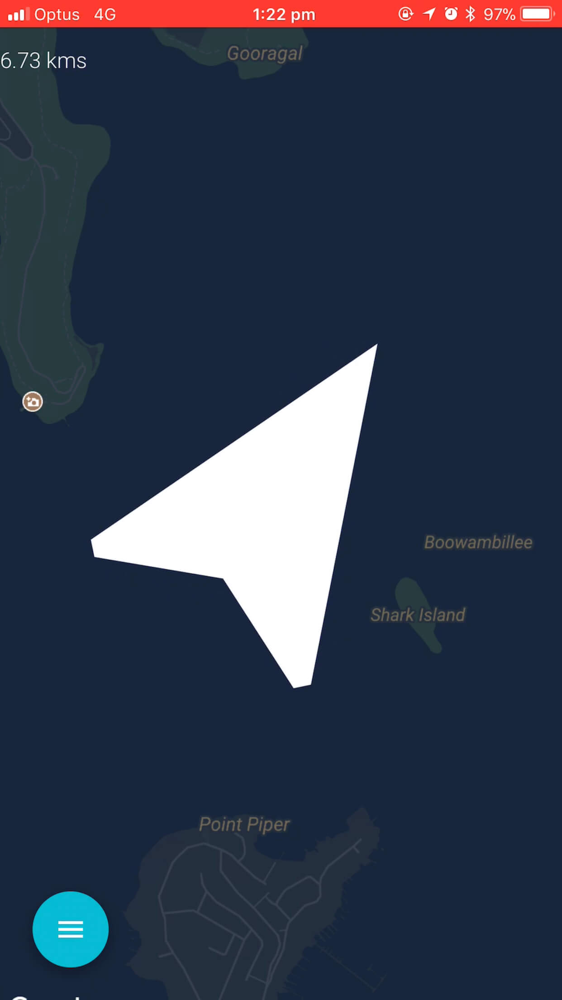
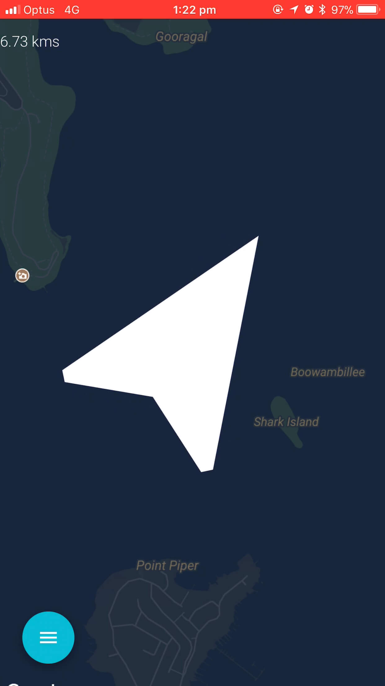

2019 - React Native


Download on iOS
2017 - React, Material UI, Firebase
2014 - Ruby on Rails

Bero started life as group project at General Assembly back in 2014.
Bero will direct you to a location as the crow flies.
Over the years it's been something that I've rebuilt to various degrees while exploring some new tech.
Most recently I decided I should check out React Native.
It leverages:
2019 - React Native
2017 - React, Material UI, Firebase
2014 - Ruby on Rails